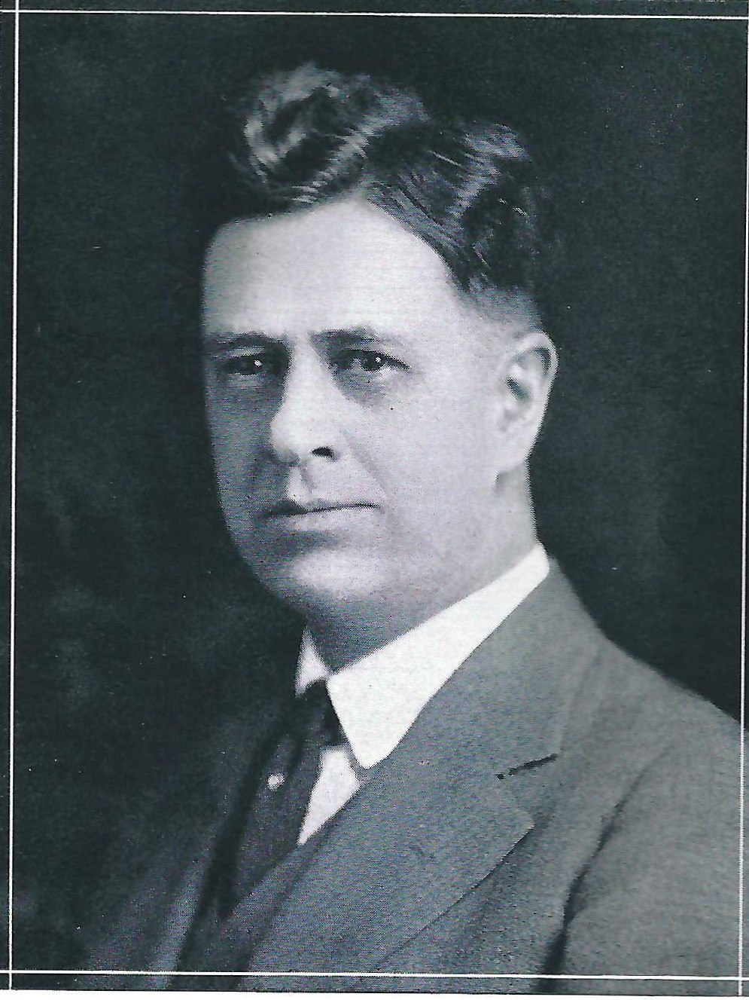

Principals
Principals
Roosevelt High School has been shaped by the leadership of many principals throughout its history. This page
highlights the individuals who have guided the school since its earliest days, beginning with the principals
of St. Johns High School, which served the community from 1906 to 1910, and later James John High School
from 1910 until Roosevelt High School opened in 1923. When Roosevelt was established, the school continued
the educational legacy that began at those earlier institutions. Together, these leaders helped shape the
culture, traditions, and direction of the school across generations of students. The photos and dates below
provide a chronological look at the principals who have served Roosevelt and its predecessor schools over
more than a century.
Roosevelt High School
KD Parman
2019 - Present
Filip Hristic
2015 - 2019
Charlene Williams
2010 - 2015
Deborah Peterson
2005 - 2009
Andrew Kelly
2002 - 2005
Bonnie Hobson
1998 - 2002
Paul Coakley
1994 - 1998
Mike Hryciw
1993 - 1994
George Galati
1984 - 1993
William Gray
1978 - 1984
David Wienecke

1970 - 1978
Arthur Wescott

1968 - 1970
Don James

1960 - 1968
Harold (Hal) York

1946 - 1960
John Griffith
1943 - 1946
Colton Meek

1939 - 1943
Charles A. Fry

1924 - 1939
W.T. Fletcher

1923 - 1924
Note: there was no campus principal for the 2009-2010 school year, only principals of the three small academies.
St. Johns High School & James John High School
W.T. Fletcher
1915 - 1923
Charles A. Fry
1912 - 1915
Clara Atwood Boss

1907 - 1912
Note: The 1906-1907 school year, the inaugural year of our institution, saw just a single class of students under a single teacher:
Miss Ethel Waters. There was no formal principal for St. Johns High School this year.